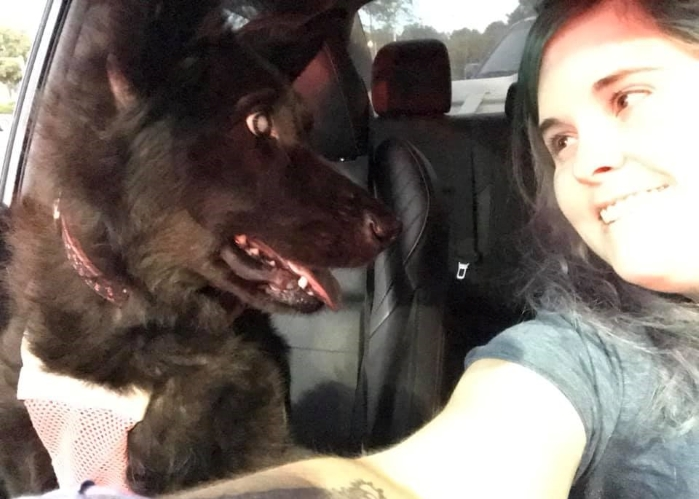

Molly, a black dog, as a puppy with some rice on her face
I adopted Molly from Wayside Waifs in November of 2009. What drew me to her was that she was all alone in her kennel while all of her brothers and sisters played together right next to her.
There was a sign on the front that said "Does not play well with others." I knew she would be perfect because I didn't have another animal at the time and she seemed so sweet. I had just moved to the area earlier in the year and did not have many friends so I was looking for a companion.
If anyone is looking to Rescue or help out, you can visit Wayside Waifs website here.
Molly as a puppy, playing in the snow
Growling Pains
as she grew older, Molly became less rambunctious and we adopted another dog through a friend of ours who was going through some hard times. She was always the alpha dog, but we never had any large problems.
We always joked that she was the leader of the pack. But she would follow me around no matter what. She would go with me on road trips and would sleep under my feet at my desk while I was working, being my shadow.
Even though she would go on car rides; she absolutely hated riding in cars and would often be extremely anxious in them. Jumping from the front to the back seat. She also had separation anxiety whenever I would leave, she would start howling.
Molly, zedrick, and Cooper running
Health Complications
When Molly started to have accidents inside again, I thought it could be a UTI, as this is a common side effect with dogs that have Urinary tract infections. I took her to the vet and they ran some tests and told me that she had Diabetes.
I was SHOCKED.
I was terrified.
For Molly. for what it meant. The vet said my options were to help her cross peacefully or to try to manage diabetes for her with insulin shots 2 times a day and monthly checkups to maintain the correct quality of life.
I chose to maintain the quality of life. It was going to be a tough journey. but she was my partner in crime.
a close up photo of Molly
We had caught the Diabetes soon enough that it did not damage her internal organs and I am forever grateful for this. She did need to begin a special diet immediately that was low grain/carb that consisted of the right types/amounts of proteins.
This was quite expensive. This is why the vet made the offer to humanely help Molly cross the bridge; because owners will let their dogs suffer from diabetes without care and let them die due to the cost of care.
Blindsided
About 6 months into managing her care, Molly's eyes began to appear glossy. When I asked the doctor about them, they let me know that this was glaucoma. Molly was going blind.
After about a year, Molly was effectively blind.
molly laying on the couch
This didn't stop her from living her *best* life. She learned to live with this impairment by learning her surroundings.
I also made sure that I didn't change her surroundings very often. I didn't move furniture or leave stuff in the middle of the floor for her to trip over.
She still occasionally ran into a wall or two, which I found hilarious because, unlike humans, dogs have 0 shame about it and she just picked herself up and kept going like nothing happened.
When I took her out in public people would ask me about her and her eyes because they thought they were pretty so I would explain her backstory a little. They would then get sad but I would just say not to feel bad because Molly didn't care.
We would still visit the dog park, go on road trips, and spend life the same way we did before diabetes and blindness. Just with a more balanced diet and medicine intake.

Molly and kelsie sitting in a car staring at each other
Crossing the Bridge
In October of 2019, Molly started to have what I thought at the time was an allergy reaction to something at home. I took her to the vet and they couldn’t figure it out; her snout was huge like she had been stung.
They gave her some Benedryl and sent her home, and then it would come back. and I would take her back. This went back and forth for a few weeks because we couldn't figure out what was going on.
In mid-November, after giving her a bath, Molly stopped being able to walk. I made her comfortable that night and the next morning I took her to the vet. They ran some X-rays and were able to deduce that she had cancer.
This was not caught early enough - this was in the late stages and at the point where her body was shutting down. I had no idea because she was still eating and drinking like she was scheduled to, but the nose being bloated was her holding water.
This was a sign, and the vet, and I missed it because we thought it was an allergic reaction for weeks so we treated the symptoms.
Molly and Kelsie sitting outside
I am so thankful for Molly and the 10 years I got to spend with her.
She was my best friend and she was with me through so much in life that I am grateful for.
I still think about her every day.
Don't overlook an animal with special needs; because they can give you just as great an experience as one without.